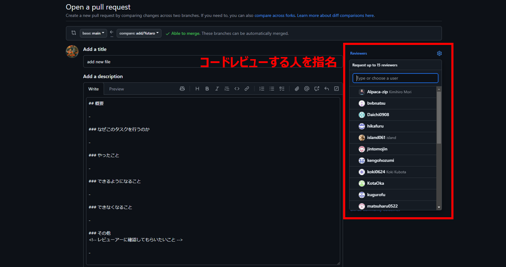

Github入門🔥
最終更新日 2024年11月14日 投稿日 2024年11月14日
はじめに
- こんにちは。この記事では、小林研究室の三年生向けにGitHubの基本的な使い方についてご紹介したいと思います。つくばチャレンジまで残り一か月となり、あまりGitHubを使う機会がないかもしれませんが、将来的な就職先で使用する可能性もあるため、是非読んでみてください。この記事では、GitHubの最低限の基本のみを説明しますので、さらに理解を深めたい場合は、適宜参考書や他のブログ記事などを活用して知識を補っていただければと思います。
なぜGitHubを使うのか？
- まず初めに、GitHubとは何でしょうか？ChatGPTによると、GitHubは、世界中のプログラマーが利用している、ソースコードを共有・管理するためのオンラインプラットフォームだそうです。この説明でなんとなくイメージはつくかもしれませんが、実際に使ってみないとその便利さは実感しにくいかもしれません。そこで、この記事の後半では、手を動かしながらGitHubの使い方に触れてもらいたいと思います。この章では、ハンズオンで実践的に学ぶ前に、GitHubの何が良いのか、コバ研内でGitHubを使うメリットを二つ紹介します。
- ・バージョン管理
- 皆さんも普段、授業や課題で作成したファイルを何度も編集し、更新していると思います。プログラムを書くときにも、コードを変更したり、新しい機能を加えたりすることがありますよね。このように、アップデートするにつれ変化するファイルの事を「バージョン」といいます。また、「過去の状態を残しておきたい」「間違えたときに簡単に元に戻したい」といった理由から、ファイルをコピーしてバックアップを取ることもあると思います。このように、同じファイルの異なるバージョンを保存・管理することを「バージョン管理」と言います。
- GitHubは、このバージョン管理を簡単に行えるツールです。ファイルの変更をバージョンとして記録しておき、後からどの段階にも戻れる仕組みを提供しています。例えば、作業がうまく進んだときにその状態を保存しておけば、後で問題が発生しても簡単にやり直すことができます。このようにGitHubを使うことで、安心して次の改良に進むことができ、トラブルがあった場合でも安全に開発を続けられるのです。
- ・共同作業
- 現在、3年生はロボットを動かすためのコードを一つのパソコンで管理しているとします。この場合、複数の人が同時にコードを編集するのが難しく、作業が重なってしまったり、誰かが行った変更が他の人に影響するリスクがあります。こうした課題に対して、GitHubを使えばより効率的に協力して作業することが可能です。GitHubには「branch（ブランチ）」という機能があり、ブランチごとに異なる作業や改良を進められます。たとえば、ある人は「GPSの開発」をするブランチで作業し、別の人は「ナビゲーションのパラメータ」を調整するブランチで作業することができます。こうすることで、互いに干渉せずに開発を進められる上、最終的に全員の作業を統合して、一つの完成版にすることも簡単です。
コミットとは？
- 「コミット」とは、コードやファイルに対する変更を記録する操作のことです。簡単に言うと、「この時点での作業内容を保存しておく」という行為です。コミットを行うことで、どの変更がどの時点で行われたのか、誰によって行われたのかを追跡できるようになります。そして、GitHubで管理しているファイルは、いつでも過去のコミット時の状態へ戻したり、コミット間を行き来したりすることができます。
リポジトリとは？
- 「リポジトリ」はコミットを貯めていく保管庫です。リポジトリは、ローカルリポジトリとリモートリポジトリの2種類あります。ローカルリポジトリは、使用しているパソコン内に作成する自分専用のリポジトリです。他の人と一緒に使うことはありません。一方、リモートリポジトリとは、GitHubなどにホストされているリポジトリでありインターネット上に存在します。共同作業をする際には、複数人が自身のローカルリポジトリで作業を行い、リモートリポジトリに作業の更新を反映させます。
ブランチとは？
- 「ブランチ」とは、プロジェクトの中でコードの「分岐点」を作り、複数の異なる作業を独立して行うことができる機能です。 通常、GitHubリポジトリには「メインのブランチ」があり、このメインブランチ（一般的に main または master）がプロジェクトの最終的な状態であり、動作が保証されているものを置く場所です。そのため、開発を進める中で新しい機能の追加やバグ修正など、異なる作業を行いたいときには、新しい「ブランチ」を作成して、その中で作業をします。これにより、メインのコードベースに影響を与えることなく、個別の作業ができます。
- さて、必要な理論の説明が一通り終わったので、実践編に移りましょう。
ユーザー登録
- まずGitHubのアカウントを持っていない方は、右側のURLからアカウントの作成をしてください。GitHub
- ユーザー名とメールアドレスの設定を行います。自分が使っているサーバーを開き、以下のコマンドを入力してください。
- 「ユーザー名の設定」（your-github-user-nameを自分のGitHubのユーザーネームに変えてください。）
- 「メアドの設定」（your-github-email@example.comをGitHubに登録した時のメアドに変えてください。）
- 「登録ができているか確認」
- 以下のように、自分のユーザー名とメールアドレスが確認できたら登録完了です。
git config --global user.name your-github-user-name
git config –-global user.email your-github-email@example.com
git config –-list
ubuntu@u235-22:~$ git config --list user.name=your-github-user-name user.email=your-github-email@example.com
ssh接続の手順
- 1. 公開鍵と秘密鍵の作成
- ファイル名やパスワードの設定をするように聞かれますが、3回エンターを押すと、id_rsaとid_rsa.pubの2つの鍵が生成されます。
- catコマンドでプロンプトに公開鍵を表示させ、コピーをしてください。
- 2. 公開鍵の追加
- 次にブラウザでGitHubの管理画面を開き、右上のアイコンから「Settings」へ進んでください。
- SSH and GPG keysを開き、New SSH Keyをクリックしてください。
- 3. 接続の確認
- 公開鍵のアップロードが終わったら、以下のコマンドを実行し接続を確認してください。
- 以下のように表示されたら接続は完了です。
ssh-keygen -t rsa
cd ~/.ssh
cat id_rsa.pub
ssh -T git@github.com
Hi (user_name)! You've successfully authenticated, but GitHub does not provide shell access.
新しいブランチを作りリモートリポジトリに変更を加えてみよう！
- 1. リモートリポジトリのコピーをローカルに持ってくる
- 今回は、コバ研のorganization内にある、test_repoリポジトリを使います。
- 初めに、以下のコマンドで、リモートリポジトリの内容を自分のローカル環境にコピーします。
- クローンしたリポジトリ内に移動し、git statusで現在のブランチの状況を確認します。
- 今現在自分がmainにいることが分かります。
- 2. 新しいブランチを作成する
- 新しいブランチを作成するには、以下のコマンドを使います。新しいブランチを作成し、そのブランチに切り替えます。今回は、ブランチ名が他の人と被らないように、"add/自分の名前" にして下さい。
- またここでも、git statusで自分が現在いるブランチを確認してみましょう。
- add/your-nameのブランチに移動していることが確認できました。
- 3. ファイルを追加してみる
- 次に、前回作ったbranchの中で作業をします。今回は単純に、テキストファイルを追加します。
- またここでも、git statusで現在の状況を確認してみましょう。
- Your-name.txt nothing added to commit but untracked files present (use "git add" to track)
- Your-name.txtが赤く表示され「未追跡ファイル」として表示されています。「未追跡ファイル」とは、Gitがこのファイルをまだ管理していないことを示しています。git addコマンドを使うことで、この「未追跡ファイル」の追跡を開始し、次にコミットをすることで変更内容を保存する流れになります。
- 4. 変更をコミットする
- まず、現在のディレクトリ内の全ての変更をgit addコマンドでステージングエリアに追加します。ステージングエリアとは、コミットの準備を行う場所です。ファイルがステージングエリアに追加されると、Gitはそのファイルを「追跡」するようになり管理下に置きます。
- ここでも、git statusで現在の状況を確認してみましょう。
- new file: Your-name.txt
- Your-name.txtが緑色で表示されコミット可能な状態であることを示しています。それでは、次にgit commitコマンドでコミットを行いましょう。コメントの部分では、変更内容が簡潔に伝わるように書きます。また、基本的に英語で書くため、DeepLなどを用いて翻訳しても構いません。
- 再度、git statusで現在の状況を確認します。
- 「working tree clean」と表示されました。これは、現在の作業ディレクトリ内のすべてのファイルがコミットされ、Gitが追跡しているファイルに未保存の変更が残っていない状態を示しています。それでは、加えたコミットをリモートリポジトリに反映させましょう。
- 5. コミットをリモートリポジトリに反映させる
- 前回ローカルリポジトリに加えたコミットを、リモートリポジトリに反映させるために以下のコマンドを使います。
- 上のコマンドを入力すると、ユーザー名とパスワードを求められます。パスワードはアクセストークンが必要なため以下に、アクセストークンの発行の手順を記載します。
- GitHubのプロフィールのSettingsを開き、一番下のDevelopper Settingsを選択
- Personal access tokensの「Tokens(classic)」を選択
- repoの項目にチェックを入れ、generate tokenをクリック
- 以上で、アクセストークンの発行の手順は終わりです。これで、パスワードにこのアクセストークンを入力すれば、コバ研内のリモートリポジトリにpushをすることができます。以下のように、自分が作ったブランチがあるか確認してみましょう。
- これで、自分の手元のPCがある日突然動かなくなったり、プログラムを変更しすぎてどのコードが悪さをしているか分からなくなった場合でも、変更前のプログラムがリモートに保存されているため安心して次の作業に移ることができます。
git clone https://github.com/KBKN-Autonomous-Robotics-Lab/test_repo.git
cd test_repo
git status
On branch main Your branch is up to date with 'origin/main'. nothing to commit, working tree clean
git switch -c ブランチ名
git status
On branch add/your-name nothing to commit, working tree clean
ブランチの命名規則について
ブランチの命名規則は組織ごとに異なりますが、コバ研では以下の命名規則を採用しています。
main: リポジトリのベースブランチ。ブランチ保護の観点から直接pushはしない。
devel/branch_name: mainブランチに統合する予定の無い特別なブランチ。特定の機能を実装したりテストしたいときにのみ利用すること。
feature/branch_name: 新しい機能を追加する際のブランチ。
add/branch_name: ファイルなどを追加する際のブランチ。
delete/branch_name: ファイルなどを削除する際のブランチ。
fix/branch_name: バグの修正をする際のブランチ。
ブランチの命名規則は組織ごとに異なりますが、コバ研では以下の命名規則を採用しています。
main: リポジトリのベースブランチ。ブランチ保護の観点から直接pushはしない。
devel/branch_name: mainブランチに統合する予定の無い特別なブランチ。特定の機能を実装したりテストしたいときにのみ利用すること。
feature/branch_name: 新しい機能を追加する際のブランチ。
add/branch_name: ファイルなどを追加する際のブランチ。
delete/branch_name: ファイルなどを削除する際のブランチ。
fix/branch_name: バグの修正をする際のブランチ。
touch 自分の名前.txt
On branch add/your-name Untracked files: (use "git add..." to include in what will be committed)
git add .
On branch add/your-name Changes to be committed: (use "git restore --staged..." to unstage)
git commit -m "コメント"
On branch add/your-name nothing to commit, working tree clean
git push origin 自分のブランチ名
注意
一度発行したトークンは二度と表示されないため必ずメモしておいて下さい。
また、トークンには有効期限があるためその都度更新、新規作成を行う必要があります。
一度発行したトークンは二度と表示されないため必ずメモしておいて下さい。
また、トークンには有効期限があるためその都度更新、新規作成を行う必要があります。
Pull Requestを出してみよう！
- 最後に、自分が作業しているブランチをmainブランチに統合する方法について説明します。
- 1. プルリクエストの作成
- コバ研のorganization内にあるtest_repoのレポジトリが置いてある場所に移動し、Pull requestsをクリックします。
- 2. ブランチの選択
- ここでは、統合したいブランチを選択します。自分が作業をしているブランチを選択してください。
- 3. コンフリクトの確認
- 次に統合できるかを確認します。他の人が同じフォルダの同じファイルを編集していた場合コンフリクトが起きてしまい、統合することはできません。コンフリクトがある場合は、先に解決してから再度Pull Requestを作ってください。* 今回はコンフリクトが起きた時の解決方法は書いていません。
- 4. プルリクエストにコメントを書く
- 統合ができるかを確認できたら、作業していたブランチでどのような機能を実装したのかを記入します。
- 5. コードレビューする人を指定
- その後、コードレビューをする人を指名します。最低1人以上は選択するようにしてください。また、今回の演習ではYutaropを選択してください。
- 6. 完了
- 最後にCreate pull requestをクリックしてプルリクエスト完了です。コードレビューで承認されたらブランチが統合されます。以上が、Pull requestを出すまでの一連の流れでした。

まとめ
- 以上がGitHubの基本的な使い方です。つくばチャレンジで使用しているコードも、GitHubを使用することで効率的に管理でき、複数人が関わるプロジェクトでもスムーズに協力できるので活用してみてください。もしGitHubの使い方でわからないことがあれば、研究室にいる人たちに聞いてください。また、今回紹介した内容はGitHubを使う上での最小限の説明に過ぎませんので、さらに深く学びたい方は以下のサイトなどを参考にしてみてください。お疲れ様でした。